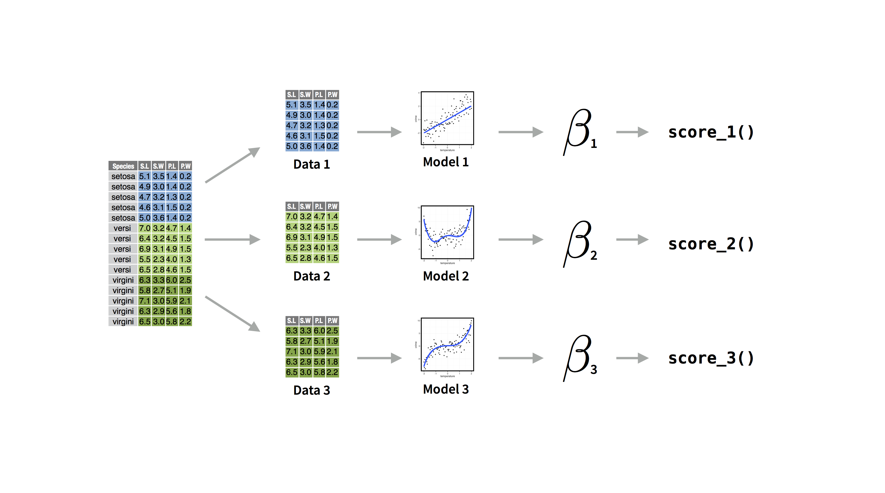
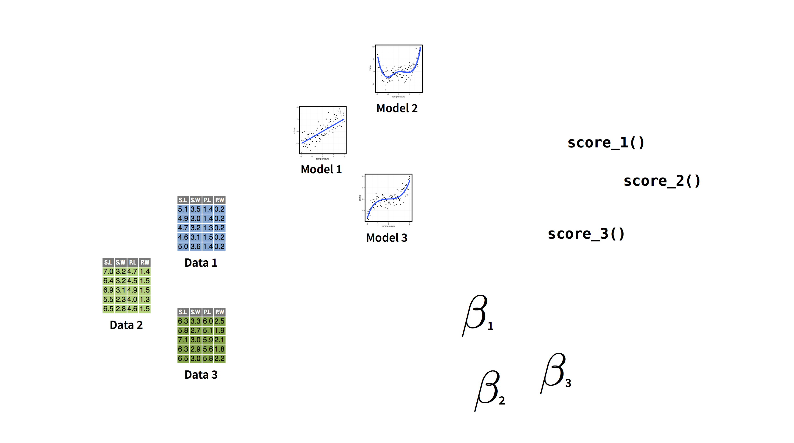
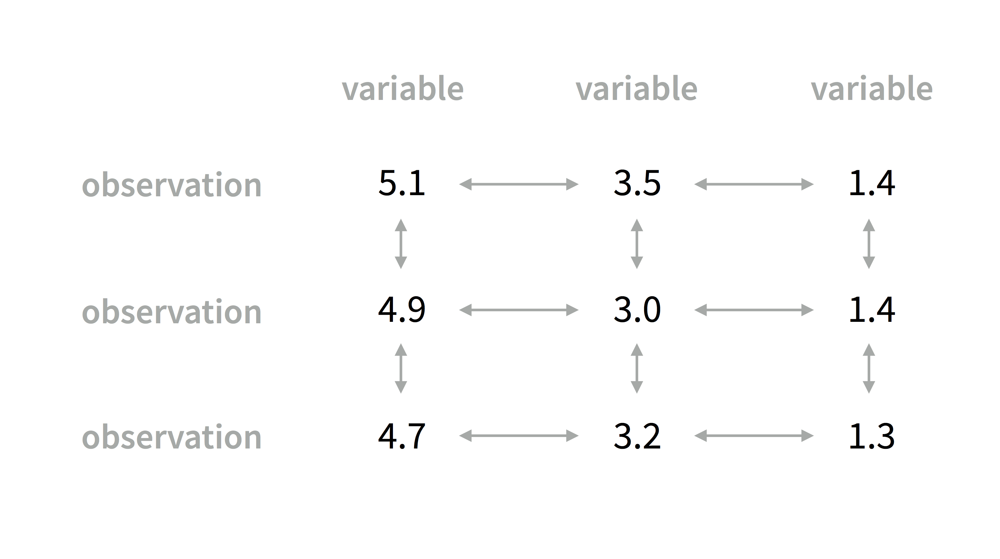
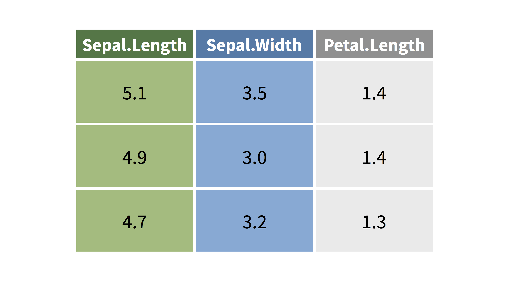
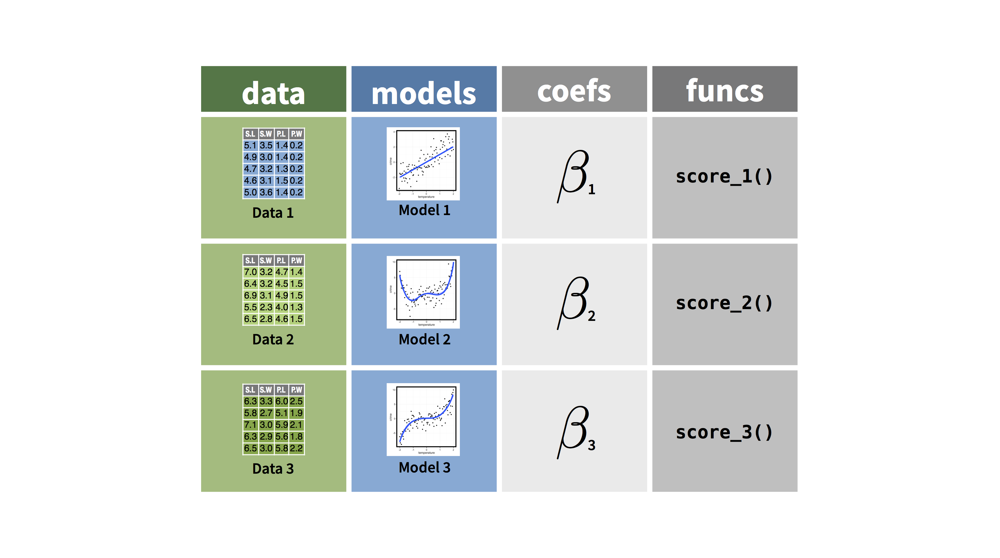
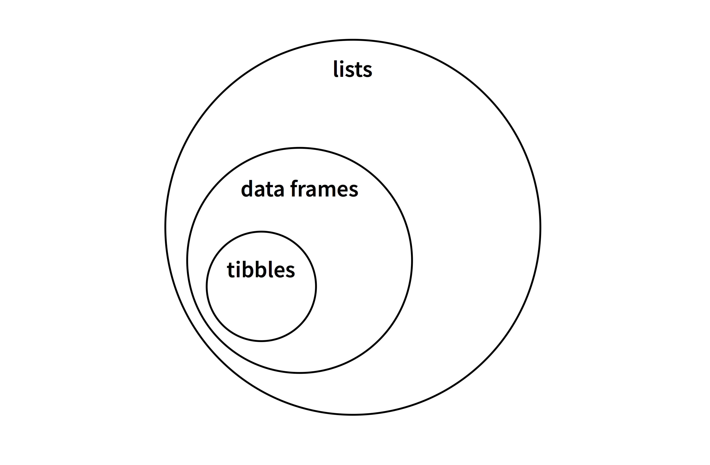
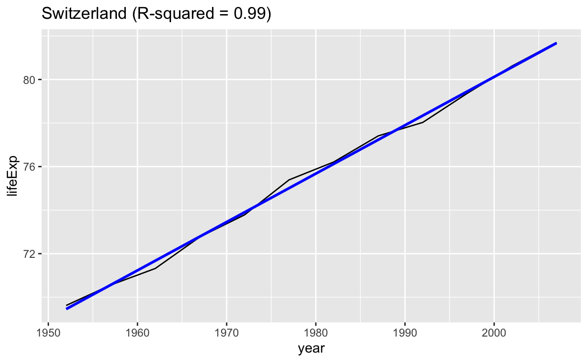
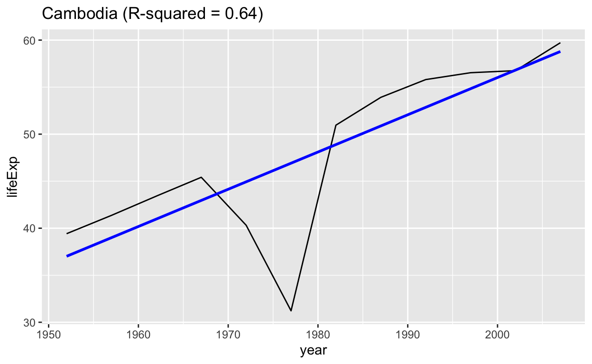
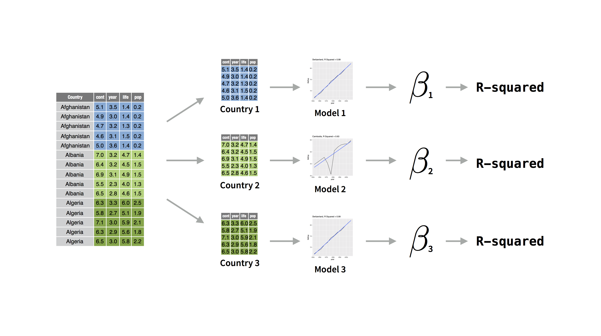
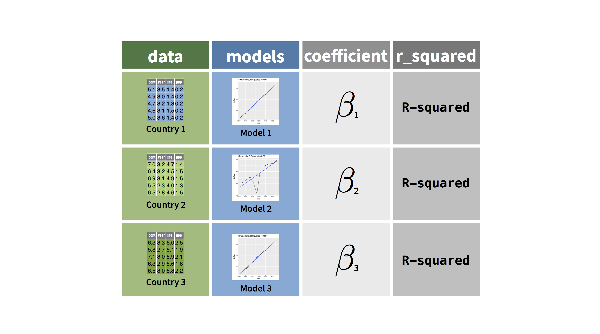

Motivation
Now that you know how to use the map family of functions, you can organize your data science work in a new way. A superior way.
Consider an example.
You have a data set that describes multiple groups. You fit a model for each group. From those models you extract coefficients, or statistics. Perhaps you use the coefficients to write a scoring function.

Soon you have many different things that are related to each other. How would you keep track of them?

This is a lot like having a data set. A data set contains many separate values that are related to each other in specific ways.

You keep track of the values by storing them in a table. Not only does the table keep the values together in one place, it encodes the relationships between the values; which means that you can use the table to do all of the cool things that you do with data sets, like filter, select, arrange, mutate, summarise, join, etc.

Why not do the same thing with all of your data analysis components? If you put them into a table, you could filter, select, mutate, summarise, and join them as well.

Well, you can. But you will need to use list columns to do it.
List Columns
Before you ask, “What is a list column?”, let’s remind ourselves what a data frame is.
Data frames
A data frame is a table of data, but R saves each data frame as a list. In this list,
- each element of the list is a vector
- each vector is the same length
Here is a list that could be a data frame
df <- list(
name = c("John", "Mary", "Mike"),
age = c(20, 21, 22),
height = c(69, 64, 72)
)
df## $name
## [1] "John" "Mary" "Mike"
##
## $age
## [1] 20 21 22
##
## $height
## [1] 69 64 72Data frames also have the class "data.frame" and a
"row.names" attribute. If we give these things to our list,
R realizes that the list represents a table and each element is a column
vector. And that’s how R builds data frames.
class(df) <- "data.frame"
attr(df, "row.names") <- c("1", "2", "3")
df## name age height
## 1 John 20 69
## 2 Mary 21 64
## 3 Mike 22 72(You would usually use as.data.frame() to convert a list
to a data frame, but now you can see the relationship between lists and
data frames).
tibbles
So data frames are a type of list.
Let’s take this a step further. Tibbles are a type of data frame.

To convert a data frame to a tibble, you assign it two extra classes
(you would usually do this with as_tibble() from the tibble
package).
library(tibble)
class(df) <- c("tbl_df", "tbl", "data.frame")
df## # A tibble: 3 × 3
## name age height
## * <chr> <dbl> <dbl>
## 1 John 20 69
## 2 Mary 21 64
## 3 Mike 22 72If you have the tibble package loaded, R will display tibbles in a slightly different way than data frames. I think the difference is an improvement.
The takeaway
The important thing to remember is that if a tibble is a data frame and a data frame is a list of vectors, then both data frames and tibbles are lists of vectors.
List columns
So what is a list column?
Often each column vector in a data frame is a data vector, like a character vector, an integer vector, or so on.
df <- data.frame(
name = c("John", "Mary", "Mike"),
age = c(20, 21, 22),
height = c(69, 64, 72)
)
df## name age height
## 1 John 20 69
## 2 Mary 21 64
## 3 Mike 22 72But a column vector can also be a list because a list is a type of vector, a recursive vector. When a column vector contains a list, we call the column a list column.
Here I’m adding a list as a list column named
heights2.
df$height2 <- list(
c(feet = 5, inches = 9),
c(feet = 5, inches = 4),
c(feet = 6, inches = 0)
)
df## name age height height2
## 1 John 20 69 5, 9
## 2 Mary 21 64 5, 4
## 3 Mike 22 72 6, 0List columns and tibbles
It is easy to inspect the contents of heights2 above;
but unfortunately, R’s print method for data frames becomes hard to read
when list columns contain exotic objects, or more than a few values in
each cell.
As a result, I recommend that you always use tibbles when you use list columns. The tibble display summarizes the contents of each list column in a more robust way.
as_tibble(df)## # A tibble: 3 × 4
## name age height height2
## <chr> <dbl> <dbl> <list>
## 1 John 20 69 <dbl [2]>
## 2 Mary 21 64 <dbl [2]>
## 3 Mike 22 72 <dbl [2]>Uses
List columns are very useful because you can put anything into a list, which means that you can put anything into a list column, even things that you might not normally think to put in a data frame…
…like model objects, functions, or other data frames.
Complications
However, the benefits of list columns do not come for free. You need to treat list columns as lists, not as data vectors.
Luckily, you already know everything you need to know to do this.
The Case Study will demonstrate the value of list columns and give you practice manipulating list columns with dplyr and purrr.
Case Study
In this primer, you’ve encountered several versions of the
gapminder data set that comes in the gapminder package.
Now let’s use the original gapminder data set to explore
changes in life expectancy in a new way.
- Click Submit Answer to see the contents of
gapminder.
library(gapminder)
gapminder"Click Submit Answer."library(gapminder)
gapminderGoals
As you saw in the last tutorial, you can discover useful information when you apply a separate linear model to each country in the data set.
For example, when you regress lifeExp on
year, the year coefficient will be an estimate
of how fast life expectancy changed in a country.
The r-squared of the model also reveals something: it shows how linear a country’s change in life expectancy was. Some countries experienced a linear change in life expectancy, like Switzerland. Other countries experienced a non-linear change in life expectancy, like Cambodia.
## `geom_smooth()` using formula = 'y ~ x'
## `geom_smooth()` using formula = 'y ~ x'
The plan
In this case study, you will:
- Split the data into separate data sets by country
- Fit a model to each data set
- Extract the
yearcoefficients from the models - Extract the R-squareds from the models

More importantly, you will use list columns to organize the outputs into a single table. This will let you quickly explore the outputs when you are finished.

Click Continue to begin.
nest()
You can split the gapminder data set into separate data
sets by country with group_by() and
nest().
- Use
group_by()to groupgapminderbycountry.group_by()comes in the dplyr package, which I have preloaded for you. - Pipe the results straight into
nest()(with no arguments).nest()comes in the tidyr package, which I’ve preloaded for you. - Click Submit to see the results. What did
nest()do?
gapminder"Begin by piping gapminder to group_by().""Don't forget to specify the variable to group by: country.""Take the grouped data and pipe it to nest()."gapminder %>%
group_by(country) %>%
nest()Nested data
The data column in your output is a list column. You can
inspect the contents of any of its cells by first extracting the column
(R will return it as a list). Then extract a “cell” (i.e. element) from
the list.
I’ve saved your previous result as nested_gapminder.
- Use
pluck()to extract the"data"column fromnested_gapminder. - Use
pluck()a second time to extract the first cell fromnested_gapminder(yes you should use%>%in this exercise to build a pipe). - Click Submit Answer. What did R return?
nested_gapminder'Recall that you can extract elements with pluck() by name (e.g. pluck(iris, "Species")) and by position (e.g. pluck(iris, 1)).'nested_gapminder %>%
pluck("data") %>%
pluck(1)unnest()
nested_gapminder contains all of the data that was
present in gapminder, which makes it easy to rebuild
gapminder. You can unnest a nested data set with
unnest(), also from the tidyr package.
Give it a try.
- Unnest
nested_gapminderto recreategapminder. Then click Submit Answer.
nested_gapminder"Call unnest() pass it nested_gapminder as its first argument."nested_gapminder %>%
unnest()Manipulating nested data
Can you fit a model to each tibble nested within
nested_gapminder and then store those models as a list
column?
Let’s approach this problem in three parts.
You have code that extracts one of the nested tibbles. Let’s fit a model to the single tibble as a test case.
- Extend the code below to fit a linear model of
lifeExp ~ yearto the tibble (See the hint if you are not familiar with some of the advanced features of piping). - Then click Submit Answer.
nested_gapminder %>%
pluck("data") %>%
pluck(1)# A tibble: 12 × 5
continent year lifeExp pop gdpPercap
<fct> <int> <dbl> <int> <dbl>
1 Asia 1952 28.8 8425333 779.
2 Asia 1957 30.3 9240934 821.
3 Asia 1962 32.0 10267083 853.
4 Asia 1967 34.0 11537966 836.
5 Asia 1972 36.1 13079460 740.
6 Asia 1977 38.4 14880372 786.
7 Asia 1982 39.9 12881816 978.
8 Asia 1987 40.8 13867957 852.
9 Asia 1992 41.7 16317921 649.
10 Asia 1997 41.8 22227415 635.
11 Asia 2002 42.1 25268405 727.
12 Asia 2007 43.8 31889923 975."By default, %>% pipes the expression on its left hand side into the first argument of the function on its right hand side. You can use a . to pipe the expression into an argument other than the first, e.g. iris %>% lm(Sepal.Length ~ Petal.Length, data = .)."nested_gapminder %>%
pluck("data") %>%
pluck(1) %>%
lm(lifeExp ~ year, data = .)Let’s push this one step further. The code below extracts the
data column of nested_gapminder as a list.
- Use
map()and an expression to apply your model to every tibble in the list. Then click Submit Answer.
nested_gapminder %>%
pluck("data")nested_gapminder %>%
pluck("data") %>%
map(~lm(lifeExp ~ year, data = .x))"You learned how to use expressions with map() in the Map Shortcuts tutorial."I’d like you to add your model output as a new column to your data frame. How do you add new columns to a data frame? Let’s review.
- Use a dplyr function to add a new column to
iris. The new column shoud be namedlength2and it should contain the output ofround(Sepal.Length). Then click Submit Answer.
iris Sepal.Length Sepal.Width Petal.Length Petal.Width Species
1 5.1 3.5 1.4 0.2 setosa
2 4.9 3.0 1.4 0.2 setosa
3 4.7 3.2 1.3 0.2 setosa
4 4.6 3.1 1.5 0.2 setosa
5 5.0 3.6 1.4 0.2 setosa
6 5.4 3.9 1.7 0.4 setosa
7 4.6 3.4 1.4 0.3 setosa
8 5.0 3.4 1.5 0.2 setosa
9 4.4 2.9 1.4 0.2 setosa
10 4.9 3.1 1.5 0.1 setosa
11 5.4 3.7 1.5 0.2 setosa
12 4.8 3.4 1.6 0.2 setosa
13 4.8 3.0 1.4 0.1 setosa
14 4.3 3.0 1.1 0.1 setosa
15 5.8 4.0 1.2 0.2 setosa
16 5.7 4.4 1.5 0.4 setosa
17 5.4 3.9 1.3 0.4 setosa
18 5.1 3.5 1.4 0.3 setosa
19 5.7 3.8 1.7 0.3 setosa
20 5.1 3.8 1.5 0.3 setosa
21 5.4 3.4 1.7 0.2 setosa
22 5.1 3.7 1.5 0.4 setosa
23 4.6 3.6 1.0 0.2 setosa
24 5.1 3.3 1.7 0.5 setosa
25 4.8 3.4 1.9 0.2 setosa
26 5.0 3.0 1.6 0.2 setosa
27 5.0 3.4 1.6 0.4 setosa
28 5.2 3.5 1.5 0.2 setosa
29 5.2 3.4 1.4 0.2 setosa
30 4.7 3.2 1.6 0.2 setosa
31 4.8 3.1 1.6 0.2 setosa
32 5.4 3.4 1.5 0.4 setosa
33 5.2 4.1 1.5 0.1 setosa
34 5.5 4.2 1.4 0.2 setosa
35 4.9 3.1 1.5 0.2 setosa
36 5.0 3.2 1.2 0.2 setosa
37 5.5 3.5 1.3 0.2 setosa
38 4.9 3.6 1.4 0.1 setosa
39 4.4 3.0 1.3 0.2 setosa
40 5.1 3.4 1.5 0.2 setosa
41 5.0 3.5 1.3 0.3 setosa
42 4.5 2.3 1.3 0.3 setosa
43 4.4 3.2 1.3 0.2 setosa
44 5.0 3.5 1.6 0.6 setosa
45 5.1 3.8 1.9 0.4 setosa
46 4.8 3.0 1.4 0.3 setosa
47 5.1 3.8 1.6 0.2 setosa
48 4.6 3.2 1.4 0.2 setosa
49 5.3 3.7 1.5 0.2 setosa
50 5.0 3.3 1.4 0.2 setosa
51 7.0 3.2 4.7 1.4 versicolor
52 6.4 3.2 4.5 1.5 versicolor
53 6.9 3.1 4.9 1.5 versicolor
54 5.5 2.3 4.0 1.3 versicolor
55 6.5 2.8 4.6 1.5 versicolor
56 5.7 2.8 4.5 1.3 versicolor
57 6.3 3.3 4.7 1.6 versicolor
58 4.9 2.4 3.3 1.0 versicolor
59 6.6 2.9 4.6 1.3 versicolor
60 5.2 2.7 3.9 1.4 versicolor
61 5.0 2.0 3.5 1.0 versicolor
62 5.9 3.0 4.2 1.5 versicolor
63 6.0 2.2 4.0 1.0 versicolor
64 6.1 2.9 4.7 1.4 versicolor
65 5.6 2.9 3.6 1.3 versicolor
66 6.7 3.1 4.4 1.4 versicolor
67 5.6 3.0 4.5 1.5 versicolor
68 5.8 2.7 4.1 1.0 versicolor
69 6.2 2.2 4.5 1.5 versicolor
70 5.6 2.5 3.9 1.1 versicolor
71 5.9 3.2 4.8 1.8 versicolor
72 6.1 2.8 4.0 1.3 versicolor
73 6.3 2.5 4.9 1.5 versicolor
74 6.1 2.8 4.7 1.2 versicolor
75 6.4 2.9 4.3 1.3 versicolor
76 6.6 3.0 4.4 1.4 versicolor
77 6.8 2.8 4.8 1.4 versicolor
78 6.7 3.0 5.0 1.7 versicolor
79 6.0 2.9 4.5 1.5 versicolor
80 5.7 2.6 3.5 1.0 versicolor
81 5.5 2.4 3.8 1.1 versicolor
82 5.5 2.4 3.7 1.0 versicolor
83 5.8 2.7 3.9 1.2 versicolor
84 6.0 2.7 5.1 1.6 versicolor
85 5.4 3.0 4.5 1.5 versicolor
86 6.0 3.4 4.5 1.6 versicolor
87 6.7 3.1 4.7 1.5 versicolor
88 6.3 2.3 4.4 1.3 versicolor
89 5.6 3.0 4.1 1.3 versicolor
90 5.5 2.5 4.0 1.3 versicolor
91 5.5 2.6 4.4 1.2 versicolor
92 6.1 3.0 4.6 1.4 versicolor
93 5.8 2.6 4.0 1.2 versicolor
94 5.0 2.3 3.3 1.0 versicolor
95 5.6 2.7 4.2 1.3 versicolor
96 5.7 3.0 4.2 1.2 versicolor
97 5.7 2.9 4.2 1.3 versicolor
98 6.2 2.9 4.3 1.3 versicolor
99 5.1 2.5 3.0 1.1 versicolor
100 5.7 2.8 4.1 1.3 versicolor
101 6.3 3.3 6.0 2.5 virginica
102 5.8 2.7 5.1 1.9 virginica
103 7.1 3.0 5.9 2.1 virginica
104 6.3 2.9 5.6 1.8 virginica
105 6.5 3.0 5.8 2.2 virginica
106 7.6 3.0 6.6 2.1 virginica
107 4.9 2.5 4.5 1.7 virginica
108 7.3 2.9 6.3 1.8 virginica
109 6.7 2.5 5.8 1.8 virginica
110 7.2 3.6 6.1 2.5 virginica
111 6.5 3.2 5.1 2.0 virginica
112 6.4 2.7 5.3 1.9 virginica
113 6.8 3.0 5.5 2.1 virginica
114 5.7 2.5 5.0 2.0 virginica
115 5.8 2.8 5.1 2.4 virginica
116 6.4 3.2 5.3 2.3 virginica
117 6.5 3.0 5.5 1.8 virginica
118 7.7 3.8 6.7 2.2 virginica
119 7.7 2.6 6.9 2.3 virginica
120 6.0 2.2 5.0 1.5 virginica
121 6.9 3.2 5.7 2.3 virginica
122 5.6 2.8 4.9 2.0 virginica
123 7.7 2.8 6.7 2.0 virginica
124 6.3 2.7 4.9 1.8 virginica
125 6.7 3.3 5.7 2.1 virginica
126 7.2 3.2 6.0 1.8 virginica
127 6.2 2.8 4.8 1.8 virginica
128 6.1 3.0 4.9 1.8 virginica
129 6.4 2.8 5.6 2.1 virginica
130 7.2 3.0 5.8 1.6 virginica
131 7.4 2.8 6.1 1.9 virginica
132 7.9 3.8 6.4 2.0 virginica
133 6.4 2.8 5.6 2.2 virginica
134 6.3 2.8 5.1 1.5 virginica
135 6.1 2.6 5.6 1.4 virginica
136 7.7 3.0 6.1 2.3 virginica
137 6.3 3.4 5.6 2.4 virginica
138 6.4 3.1 5.5 1.8 virginica
139 6.0 3.0 4.8 1.8 virginica
140 6.9 3.1 5.4 2.1 virginica
141 6.7 3.1 5.6 2.4 virginica
142 6.9 3.1 5.1 2.3 virginica
143 5.8 2.7 5.1 1.9 virginica
144 6.8 3.2 5.9 2.3 virginica
145 6.7 3.3 5.7 2.5 virginica
146 6.7 3.0 5.2 2.3 virginica
147 6.3 2.5 5.0 1.9 virginica
148 6.5 3.0 5.2 2.0 virginica
149 6.2 3.4 5.4 2.3 virginica
150 5.9 3.0 5.1 1.8 virginicairis %>%
mutate(length2 = round(Sepal.Length))"You learned about dplyr functions in the Work with Data primer."Models
Can you use what you did in the last three exercises to add a list
column to your data set that looks like this? models
contains the output of your map expression.
## # A tibble: 142 × 3
## # Groups: country [142]
## country data models
## <fct> <list> <list>
## 1 Afghanistan <tibble [12 × 5]> <lm>
## 2 Albania <tibble [12 × 5]> <lm>
## 3 Algeria <tibble [12 × 5]> <lm>
## 4 Angola <tibble [12 × 5]> <lm>
## 5 Argentina <tibble [12 × 5]> <lm>
## 6 Australia <tibble [12 × 5]> <lm>
## 7 Austria <tibble [12 × 5]> <lm>
## 8 Bahrain <tibble [12 × 5]> <lm>
## 9 Bangladesh <tibble [12 × 5]> <lm>
## 10 Belgium <tibble [12 × 5]> <lm>
## # ℹ 132 more rowsAdd a new column to your data frame named
models.modelsshould be a list column that contains the result of fitting~lm(lifeExp ~ year, data = .x)to each tibble indata.Click Hints if you would like step by step guidance. Then click Submit Answer.
nested_gapminder# A tibble: 142 × 2
# Groups: country [142]
country data
<fct> <list>
1 Afghanistan <tibble [12 × 5]>
2 Albania <tibble [12 × 5]>
3 Algeria <tibble [12 × 5]>
4 Angola <tibble [12 × 5]>
5 Argentina <tibble [12 × 5]>
6 Australia <tibble [12 × 5]>
7 Austria <tibble [12 × 5]>
8 Bahrain <tibble [12 × 5]>
9 Bangladesh <tibble [12 × 5]>
10 Belgium <tibble [12 × 5]>
# ℹ 132 more rowsnested_gapminder %>%
mutate(models = map(data, ~lm(lifeExp ~ year, data = .x)))"nested_gapminder is a table. You want to add a new column to it. So your first call should be to mutate().""You want to use mutate() to create a new column named models.""models should contain the map() output that you created in the previous exercise...""...i.e., models should contain the output of data %>% map(~lm(lifeExp ~ year, data = .x)). Is this output a list? Yes. Can mutate() handle a list? Sure, mutate() will save it as a list column."Coefficients
Next, let’s extract the year coefficients of each model
and save them as a column in our data frame named
coefficient, like this:
## # A tibble: 142 × 4
## # Groups: country [142]
## country data models coefficient
## <fct> <list> <list> <dbl>
## 1 Afghanistan <tibble [12 × 5]> <lm> 0.275
## 2 Albania <tibble [12 × 5]> <lm> 0.335
## 3 Algeria <tibble [12 × 5]> <lm> 0.569
## 4 Angola <tibble [12 × 5]> <lm> 0.209
## 5 Argentina <tibble [12 × 5]> <lm> 0.232
## 6 Australia <tibble [12 × 5]> <lm> 0.228
## 7 Austria <tibble [12 × 5]> <lm> 0.242
## 8 Bahrain <tibble [12 × 5]> <lm> 0.468
## 9 Bangladesh <tibble [12 × 5]> <lm> 0.498
## 10 Belgium <tibble [12 × 5]> <lm> 0.209
## # ℹ 132 more rowsI’ve saved your previous result as gap_models. Let’s add
a new column to gap_models that contains the year
coefficient for each model. To do this:
- Use
mutate()to add a new column namedcoefficienttogap_models - Within
mutate(), use a function that takes a list as input (models) and returns a double vector as output to place incoefficient. Don’t forget to actually providemodelsas an argument when you call the function. - Use the map expression
~coef(.x) %>% pluck("year")to populatecoefficientwith the year coefficients of each model. - Then click Submit Answer.
There is a lot going on here, so don’t be afraid to click Show Hint if you get stuck.
gap_models# A tibble: 142 × 3
# Groups: country [142]
country data models
<fct> <list> <list>
1 Afghanistan <tibble [12 × 5]> <lm>
2 Albania <tibble [12 × 5]> <lm>
3 Algeria <tibble [12 × 5]> <lm>
4 Angola <tibble [12 × 5]> <lm>
5 Argentina <tibble [12 × 5]> <lm>
6 Australia <tibble [12 × 5]> <lm>
7 Austria <tibble [12 × 5]> <lm>
8 Bahrain <tibble [12 × 5]> <lm>
9 Bangladesh <tibble [12 × 5]> <lm>
10 Belgium <tibble [12 × 5]> <lm>
# ℹ 132 more rowsgap_models %>%
mutate(coefficient = map_dbl(models, ~coef(.x) %>% pluck("year")))"You learned about map functions that return different types of output in the Map tutorial.""You learned about map functions that return different types of output in the Map tutorial."R-squared
Repeat the previous workflow one more time, but this time create a column that contains the R-squared from each model, like this:
## # A tibble: 142 × 5
## # Groups: country [142]
## country data models coefficient r_squared
## <fct> <list> <list> <dbl> <dbl>
## 1 Afghanistan <tibble [12 × 5]> <lm> 0.275 0.948
## 2 Albania <tibble [12 × 5]> <lm> 0.335 0.911
## 3 Algeria <tibble [12 × 5]> <lm> 0.569 0.985
## 4 Angola <tibble [12 × 5]> <lm> 0.209 0.888
## 5 Argentina <tibble [12 × 5]> <lm> 0.232 0.996
## 6 Australia <tibble [12 × 5]> <lm> 0.228 0.980
## 7 Austria <tibble [12 × 5]> <lm> 0.242 0.992
## 8 Bahrain <tibble [12 × 5]> <lm> 0.468 0.967
## 9 Bangladesh <tibble [12 × 5]> <lm> 0.498 0.989
## 10 Belgium <tibble [12 × 5]> <lm> 0.209 0.995
## # ℹ 132 more rowsYou can use the map expression
~summary(.x) %>% pluck("r.squared") to acquire the
R-squares. Do you remember the rest of the workflow?
I’ve saved your previous result as gap_coefs.
- Add an
r_squaredcolumn togap_coefs.
gap_coefs# A tibble: 142 × 4
# Groups: country [142]
country data models coefficient
<fct> <list> <list> <dbl>
1 Afghanistan <tibble [12 × 5]> <lm> 0.275
2 Albania <tibble [12 × 5]> <lm> 0.335
3 Algeria <tibble [12 × 5]> <lm> 0.569
4 Angola <tibble [12 × 5]> <lm> 0.209
5 Argentina <tibble [12 × 5]> <lm> 0.232
6 Australia <tibble [12 × 5]> <lm> 0.228
7 Austria <tibble [12 × 5]> <lm> 0.242
8 Bahrain <tibble [12 × 5]> <lm> 0.468
9 Bangladesh <tibble [12 × 5]> <lm> 0.498
10 Belgium <tibble [12 × 5]> <lm> 0.209
# ℹ 132 more rowsgap_coefs %>%
mutate(r_squared = map_dbl(models, ~summary(.x) %>% pluck("r.squared")))"gap_coefs is a table. You want to add a new column to it. So your first call should be to mutate().""You want to use mutate() to create a new column named r_squared.""To make r_squared you need to begin with the models column, which is a list and end with a numeric (double) vector to put in r_squared. That is a job for map_dbl.""Be sure to call models as the first argument of map_dbl. The second argument should be the expression from the prompt."Why list columns?
List columns allowed you to keep the separate pieces of your analysis in one place. You put data frames and linear model objects into your list columns, but you could’ve put any type of object in your list columns.
And to accomplish this, all you needed to do was combine what you know about dplyr and purrr.
But why use list columns?
Efficiency
First of all, list columns are efficient.
Some things, like models, take a lot of computation to generate. It makes sense to store these things so you do not need to regenerate them in the future.
Because you retained your models in your data set, it was easy to pull out the coefficients and then the R-squareds from each model, without re-fitting the models.
You could store the models independently as a list, but then you would have to keep track of the list and ensure that it doesn’t become out of synch with your data set.
Power
Second, power. You are a data scientist. You know how to wrangle tables. By placing the pieces of your analysis into a table you can wrangle them too.
For example…
What if you want to find the models with the most rapid increase in life expectancy?
gap_final %>%
arrange(desc(coefficient))## # A tibble: 142 × 5
## # Groups: country [142]
## country data models coefficient r_squared
## <fct> <list> <list> <dbl> <dbl>
## 1 Oman <tibble [12 × 5]> <lm> 0.772 0.975
## 2 Vietnam <tibble [12 × 5]> <lm> 0.672 0.989
## 3 Saudi Arabia <tibble [12 × 5]> <lm> 0.650 0.972
## 4 Indonesia <tibble [12 × 5]> <lm> 0.635 0.997
## 5 Libya <tibble [12 × 5]> <lm> 0.626 0.983
## 6 Yemen, Rep. <tibble [12 × 5]> <lm> 0.605 0.981
## 7 West Bank and Gaza <tibble [12 × 5]> <lm> 0.601 0.970
## 8 Tunisia <tibble [12 × 5]> <lm> 0.588 0.981
## 9 Gambia <tibble [12 × 5]> <lm> 0.582 0.989
## 10 Jordan <tibble [12 × 5]> <lm> 0.572 0.970
## # ℹ 132 more rowsHow about the ten countries with the most non-linear change in life expectancy? Here they are, along with all of their data.
gap_final %>%
top_n(10, wt = desc(r_squared))## # A tibble: 142 × 5
## # Groups: country [142]
## country data models coefficient r_squared
## <fct> <list> <list> <dbl> <dbl>
## 1 Afghanistan <tibble [12 × 5]> <lm> 0.275 0.948
## 2 Albania <tibble [12 × 5]> <lm> 0.335 0.911
## 3 Algeria <tibble [12 × 5]> <lm> 0.569 0.985
## 4 Angola <tibble [12 × 5]> <lm> 0.209 0.888
## 5 Argentina <tibble [12 × 5]> <lm> 0.232 0.996
## 6 Australia <tibble [12 × 5]> <lm> 0.228 0.980
## 7 Austria <tibble [12 × 5]> <lm> 0.242 0.992
## 8 Bahrain <tibble [12 × 5]> <lm> 0.468 0.967
## 9 Bangladesh <tibble [12 × 5]> <lm> 0.498 0.989
## 10 Belgium <tibble [12 × 5]> <lm> 0.209 0.995
## # ℹ 132 more rowsInterested in comparing the two Koreas? Here is everything you need. (North Korea is the democratic one).
gap_final %>%
filter(str_detect(country, "Korea"))## # A tibble: 2 × 5
## # Groups: country [2]
## country data models coefficient r_squared
## <fct> <list> <list> <dbl> <dbl>
## 1 Korea, Dem. Rep. <tibble [12 × 5]> <lm> 0.316 0.703
## 2 Korea, Rep. <tibble [12 × 5]> <lm> 0.555 0.988Once you place all of your output into a single table, it is easy to arrange, filter, summarise, mutate, and select from your results.
Leaving list columns
Remember that you can access the contents of any cell in a list
column in all of the usual ways. For example, each of these pieces of
code would extract the first model from gap_final.
gap_final %>%
pluck("models") %>%
pluck(1)
gap_final[[1, 3]]
gap_final$models[[1]]##
## Call:
## lm(formula = lifeExp ~ year, data = .x)
##
## Coefficients:
## (Intercept) year
## -507.5343 0.2753Congratulations
Congratulations on finishing the tutorial and the primer. You have learned a new vocabulary of R functions that will allow you to both iterate and organize your work.
I urge you to explore what list columns and iteration can do for you in your own projects.
To learn more about the purrr package, visit purrr.tidyverse.org.